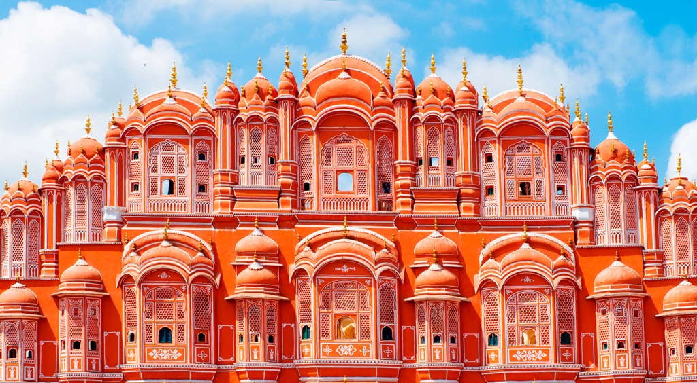
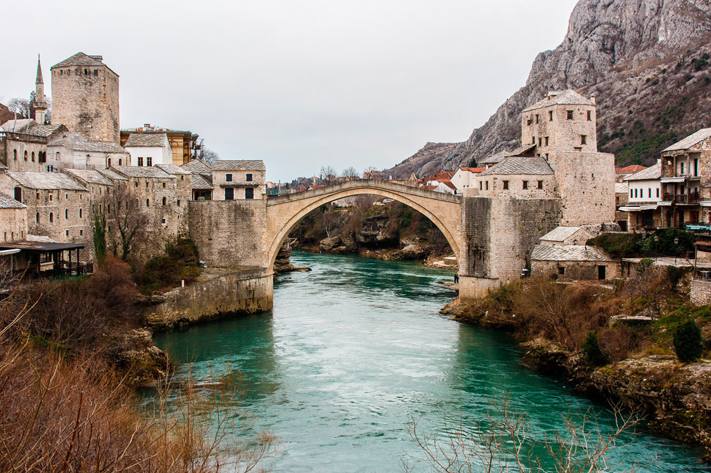
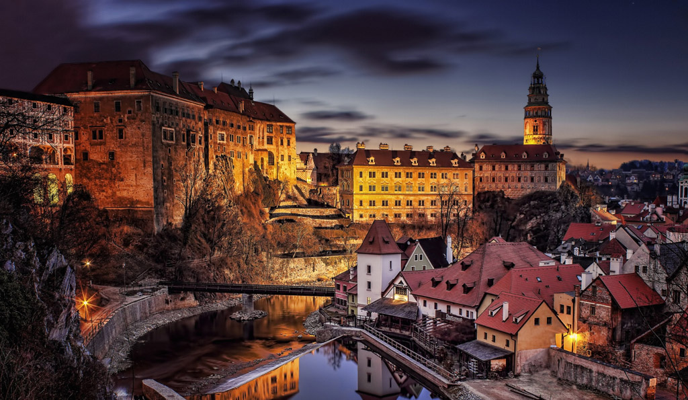

Neumarkt, Dresden

Germany
City Hall, Belfast
Northern Ireland
Parliament, Budapest

Hungary
Curtea de Arges Monastery

Romania
Hawa Mahal, Jaipur

India
Perast Bay

Montenegro
Cittá Alta, Bergamo

Italy
Bled Lake

Slovenia
Cáceres Old Town

Spain
Chefchaouen, the Blue City

Morocco
Salzburg Castle

Austria
Edimburgh cityscape

Scotland
Krka National Park

Croatia
House of Blackheads, Riga

Letonia
City Centre, Bruges

Belgium
Mostar Bridge

Bosnia-Herzegovina
York Cathedral

England
Palace of Culture and Science, Warsaw

Poland
Cesky Krumlov

Czech Republic
Inisheer Island

Ireland